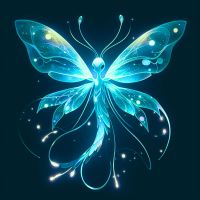

STARY NIGHT
Look up at the night sky, and find yourself immersed in the amazing mountain range of Aspen. The starry sky combined with the breathtaking scenery creates a moment of pure magic, leaving you in awe of nature's beauty.
- Immerse yourself in the serene beauty of Aspen's majestic mountain range under a starry night sky
- Experience the tranquility and wonder as the stunning scenery captivates your senses.
- Let the natural beauty of Aspen inspire awe and provide a peaceful escape from everyday life.
The Magic of Glowing Creatures
Did you know some animals and plants can glow in the dark? This cool trick is called bioluminescence. It happens when a special chemical reaction inside their bodies creates light. It’s like nature’s version of neon lights!
Here’s how it works:
- A molecule called luciferin mixes with oxygen.
- An enzyme called luciferase helps speed up the process.
- Voilà! A glow appears, but without heat – it’s called “cold light.”

Were Do We see it?
-

Fireflies: They flash to talk to each other and attract mates
- Deep-sea fish: They use it to scare predators or lure prey.
- Fungi and plants: Some even glow to attract bugs or spread spores!